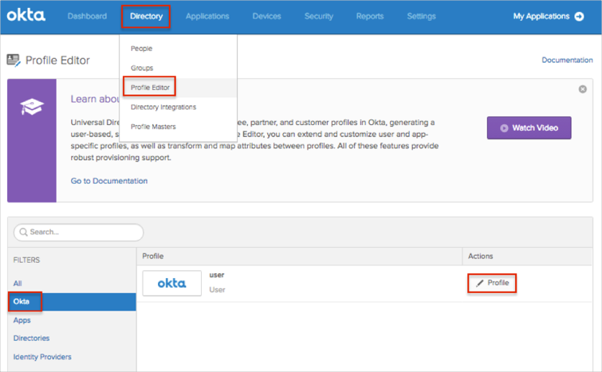
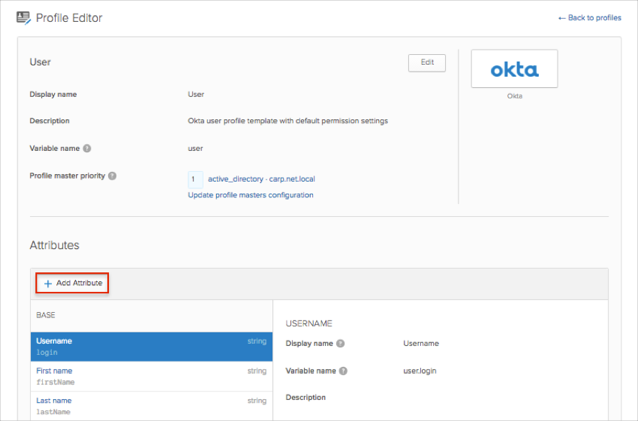
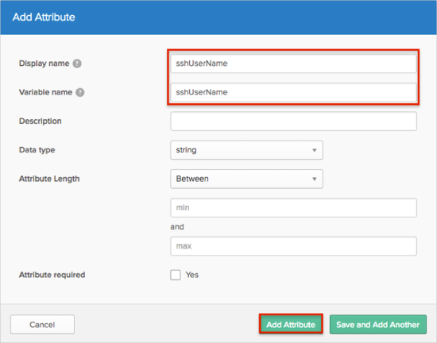
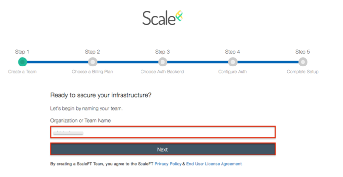
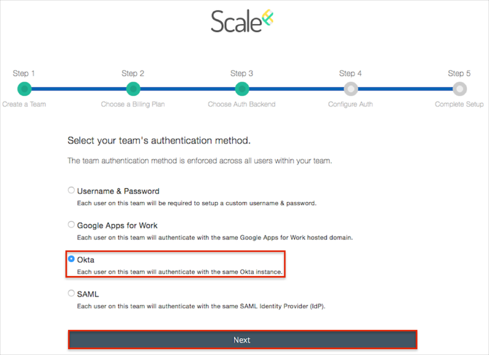
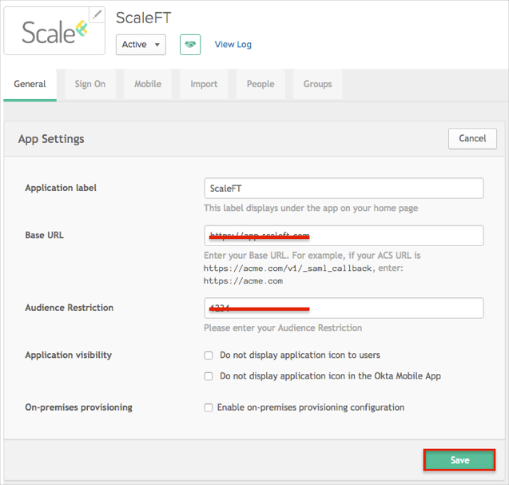
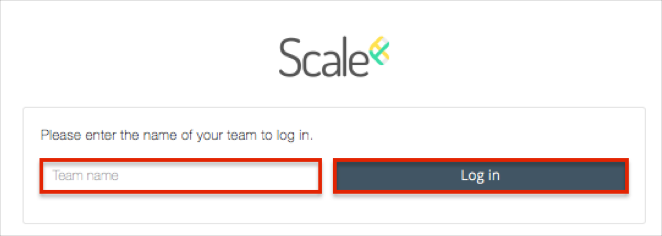

The ScaleFT application is pre-configured to pass the custom attribute SSHUserName as part of the SAML assertion. In order to be able to send custom attributes, you need to add this custom attribute in the Okta User Base Profile, as described below:
From your Okta Dashboard, navigate to Directory > Profile Editor.
Select Okta from the list of filters on the left.
Click the edit Profile button.

Click the Add Attribute button.

Enter sshUserName as the value for the Display name and Variable name fields, then click Add Attribute.

Make sure the custom attribute sshUserName is populated in the Okta User Base Profile, and that the correct attribute mappings are set with AD/LDAP (if needed). If this value is empty, Okta will pass null values to ScaleFT.
Open your signup invite link, then follow the steps below:
Step 1:
Enter your Organization or Team Name.
Click Next.

Step 2:
Choose your Billing Plan.
Click Next.
Step 3:
Select Okta as your team’s authentication method.
Click Next.

Step 4:
Make a copy of the values for Base URL and Audience URI.
In Okta, select the General tab for the ScaleFT app, then click Edit.
Enter the values you just copied into the corresponding Base URL and Audience URI fields.
Click Save.

Identity Provider SSO URL: Copy and paste the following:
Sign into the Okta Admin Dashboard to generate this variable.
Identity Provider Issuer: Copy and paste the following:
Sign into the Okta Admin Dashboard to generate this variable.Identity Provider x.509 Certificate: Copy and paste the following (PEM text format):
Sign into the Okta Admin Dashboard to generate this variable.
Click the Authenticate with Okta button.

Done!
Notes:
SP-initiated flows and Just In Time (JIT) provisioning are supported.
IdP-initiated flows are not supported.
Open your Base URL (see step 4a, above).
